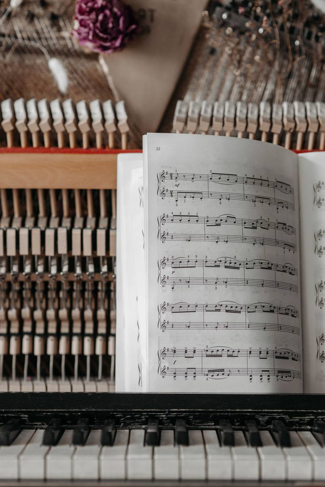

Otkrij svoj glas. Peva se odavde.
Individualni časovi pevanja preko video poziva, za početnike, napredne i pripremu za takmičenja. Zajedno otkrivamo i razvijamo originalni i jedinstveni stil tvog pevanja.

vokalni pedagog, Beč
Za učenje pevanja preduslov je da učenik ima želju za učenjem i napretkom.
MA Sanja Trifunović Gerginov je vrhunski muzički pedagog sa 15 godina iskustva u podučavanju vokalne tehnike. Završila je master studije na Fakultetu muzičke umetnosti u Beogradu i stručno usavršavanje u Austriji.
Autor je nekoliko stručnih publikacija o vokalnoj tehnici, a njena najnovija publikacija o osnovama vokalne tehnike je u pripremi.
Tri kursa, jedan cilj: tvoj glas.
Otkrijte sa mnom sve pevačke tajne!
Pogledaj na YouTube-u ↗
Zagrej glas uz klavir, bilo kad.
Interaktivna klavijatura sa vežbama za zagrevanje. Izabereš vežbu i početni ton, klavir svira, a ti pevaš. Svaki krug se podiže za pola stepena.
Od Beograda do Lucerna.
„Na Grandovoj audiciji su mi rekli da nisam za muziku, danas se samo time bavim i od toga živim.“
„Ja sam počeo od nule, prvo smo radili na mom sluhu godinu dana… Nakon otprilike godinu i po dana sam našao svoj prvi bend.“
„Ubedljivo najbolji časovi pevanja! Sanja veoma dobro objašnjava, ima pravi odgovor na svako pitanje.“
Čitaj između časova.
Koliko je časova potrebno da naučim da pevam?
Koliko brzo će učenik napredovati na časovima pevanja zavisi, zapravo, od nekoliko faktora.
Pročitaj →DisanjeSvakodnevno pravilno disanje kao glavni preduslov za zdrav život i dobro pevanje
Sigurno ste čuli za izraz „disati punim plućima“. To znači živeti ispunjen život, punim kapacitetom.
Pročitaj →TehnikaPravilno držanje tela prilikom pevanja
Držanje tela svakog pevača treba da bude prirodno da bi svi mišići u telu bili opušteni.
Pročitaj →